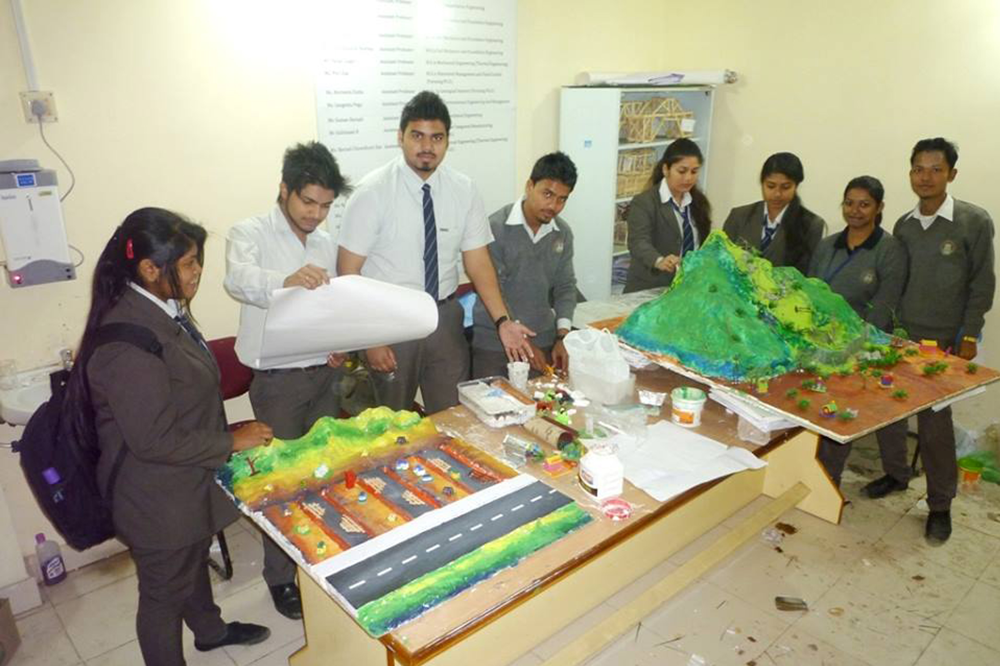

Civil Engineering
The Department of Civil Engineering offers undergraduate,
postgraduate and doctorate degree courses. The department possesses qualified faculty,
state-of-the-art infrastructure and its own library. As a part of the infrastructure,
the department laboratories are equipped with modern equipment and are capable of conducting
research projects and provide consultancy to the industry. The well-equipped hi-tech computer
lab provides students with a hands-on experience of the industry relevant softwares that are part
of their curriculum. The curriculum is kept up-to-date and relevant by involving industry experts
in the revision process. The department has a very active student association which is managed by
the students. This association organizes events, expert lectures, site visits and personality
development programs every year. The association also publishes a newsletter every Year. All
students complete a six week internship before their final year. For their internship they are
sent to various companies across India for on-the-job training in various technical roles.
The Department of Civil Engineering is honing the potential of the students to face the challenges in this vast field.
The department also runs a postgraduate course in Hydraulic Engineering, for which it receives
the guidance from internationally recognized scientists in the field of Hydraulics. The P. G.
Students perform their dissertation works in collaboration with CW & PRS Laboratories,
Government of India – especially the model studies. Civil engineering is a professional
engineering discipline that deals with the design, construction, and maintenance of the physical and naturally built environment, including works like roads, bridges, canals, dams, and buildings. Civil engineering is the oldest engineering discipline after military engineering. Due to extensive growth in the construction, infrastructure and real estate sectors in India, the demand of civil engineers is high. Career opportunities for these professionals are available with firms of both the private and public sectors. Besides this, job opportunities are obtainable for them abroad too. Civil Engineers can pursue a very
lucrative career.